# A tibble: 4 × 3
term estimate std.error
<chr> <dbl> <dbl>
1 (Intercept) 187. 0.568
2 speciesChinstrap 5.72 0.841
3 speciesGentoo 27.0 0.707
4 sexmale 6.85 0.628ST312: Two-way ANOVA (13)
Intro to Regression
2026-11-12
Checklist
– Homework-3 assigned 11-13; due 11-20
– Rubric assignment is out now; due 11-27
– Don’t forget about the Statistics Experience (12-1)
– Final Exam
> December 3rd 3:30pm in our classroom
> Cumulative with a focus on unit-IIILast Time
\(Ho:\) The effect of Sex is the same at all levels of factor Species on flipper length at the population level
\(Ha:\) The effect of Sex depends on the levels of Species on flipper length at the population level
Picture
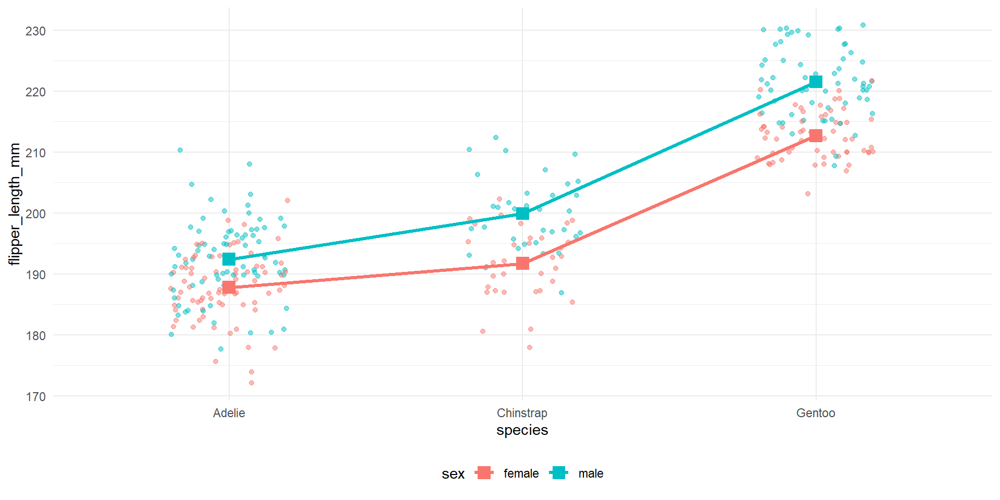
Assumptions
– Independence of observations
– Normality of Residuals
– Equal Variance
Residuals
Observed - Predicted still applies!
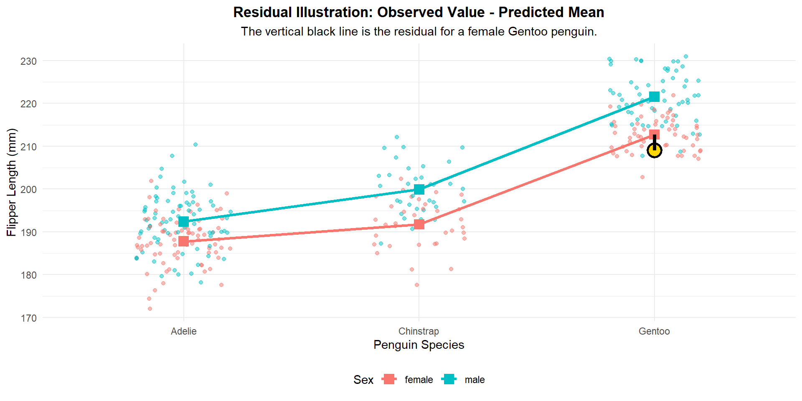
Normality of residuals
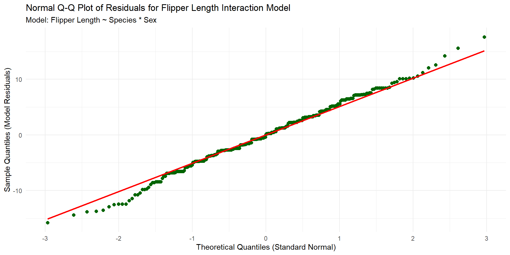
Equal Variance
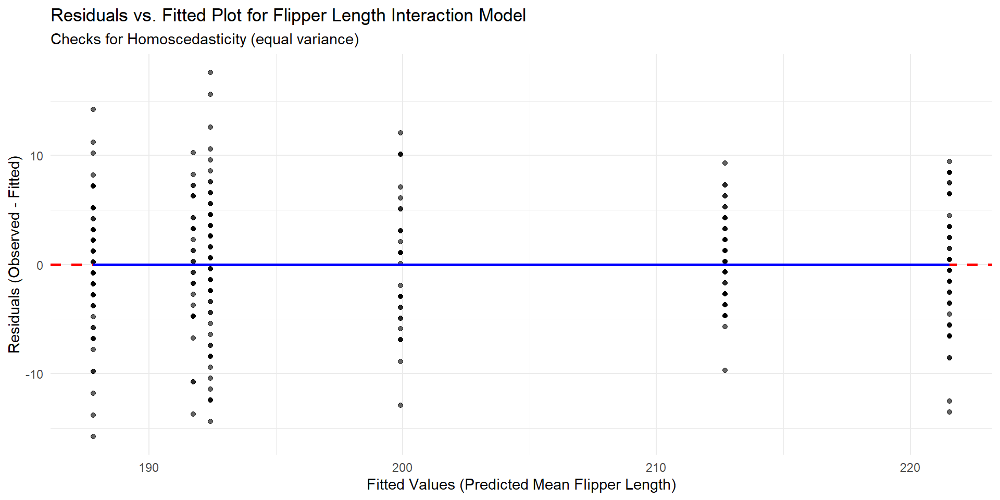
Our statistic
\[F_{A \times B} = \frac{MS_{A \times B}}{MS_{Error}}\]
\[MS_{A \times B} = \frac{SS_{A \times B}}{df_{A \times B}}\]
\[MS_{A \times B} = \frac{SS_{error}}{df_{error}}\]
Break it down
\[ SS_{\text{AxB}} = n\sum_{i=1}^{a}\sum_{j=1}^{b} \left( \bar{Y}_{ij,\text{interaction}} - \bar{Y}_{ij,\text{additive}} \right)^2 \]
\(SS_{A \times B}\) -
\[\mathbf{SS_{Error} = \sum_{i=1}^{a} \sum_{j=1}^{b} \sum_{k=1}^{n} (Y_{ijk} - \bar{Y}_{ij})^2}\]
\(SS_{error}\) -
Output
Additive Model
Picture
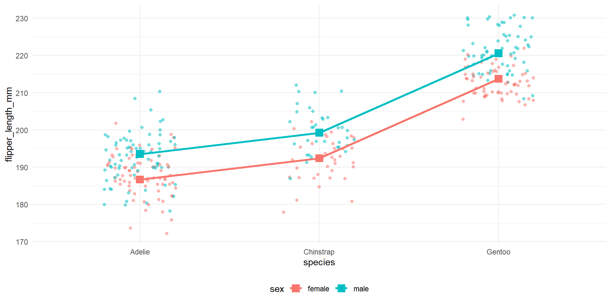
Output
Interaction model
# A tibble: 6 × 3
term estimate std.error
<chr> <dbl> <dbl>
1 (Intercept) 188. 0.662
2 speciesChinstrap 3.94 1.17
3 speciesGentoo 24.9 0.995
4 sexmale 4.62 0.936
5 speciesChinstrap:sexmale 3.56 1.66
6 speciesGentoo:sexmale 4.22 1.40 Picture
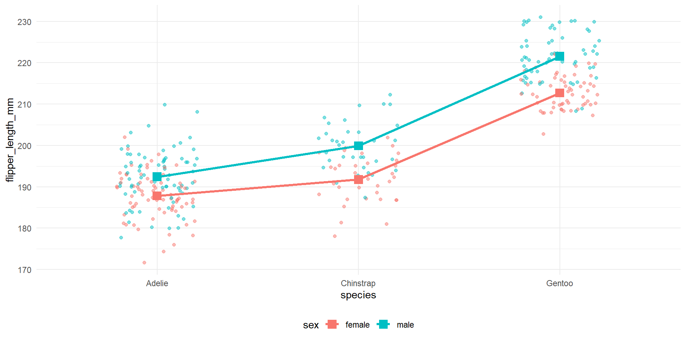
Results
Df Sum Sq Mean Sq F value Pr(>F)
species 2 50526 25263 789.912 < 2e-16 ***
sex 1 3906 3906 122.119 < 2e-16 ***
species:sex 2 329 165 5.144 0.00631 **
Residuals 327 10458 32
---
Signif. codes: 0 '***' 0.001 '**' 0.01 '*' 0.05 '.' 0.1 ' ' 1What is the distribution our F-statistic follows?
Distribution
F-distribution
\[\mathbf{df_{A \times B} = (a - 1)(b - 1)}\]
\[\mathbf{df_{Error} = ab(n - 1)}\]
What does this tell us?
– Reject the null hypothesis
– Strong evidence to conclude that the relationship between Species and Flipper Length does depend on the Sex of the Penguin.
Note
If there is evidence of an interaction effect, this is where we stop!
The questions below don’t make sense if we have evidence of an interaction!
– We can test for the significance of main effect A (given B is in the model)
– We can test for the significance of main effect B (given A is in the model)
Research Questions
For demonstration purposes, we are going to remove the interaction term from the model, and test the main effect!
– We can test for the significance of main effect A (given B is in the model) <- Let’s do this now
– We can test for the significance of main effect B (given A is in the model)
RQ: Is there a relationship between Sex and Flipper Length, give Species is in our model?
Research Questions
For demonstration purposes, we are going to remove the interaction term from the model, and test the main effect!
– We can test for the significance of main effect A (given B is in the model) <- Let’s do this now
– We can test for the significance of main effect B (given A is in the model)
RQ: Is there a relationship between Sex and Flipper Length, give Species is in our model?
What does this look like?
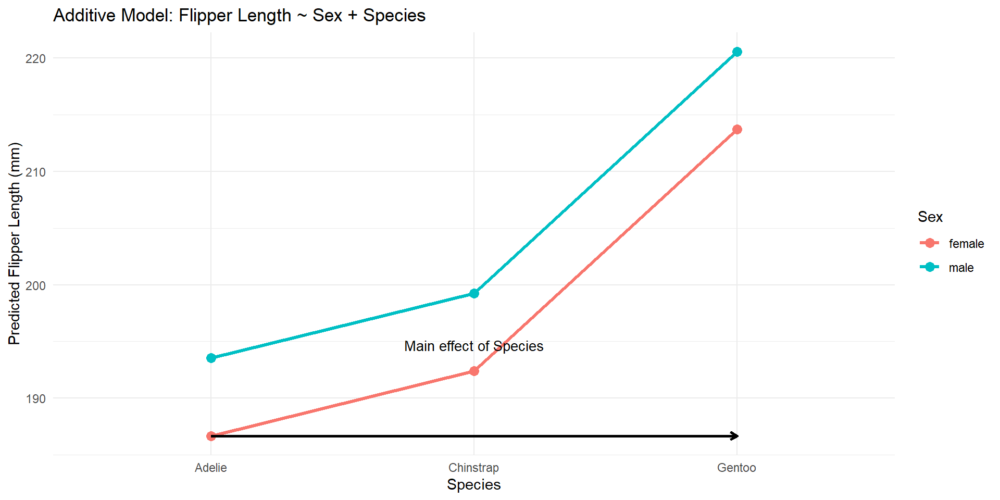
vs
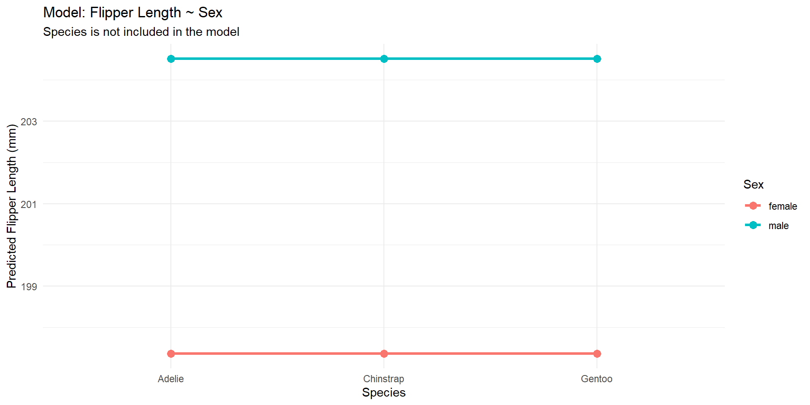
Model notation
Additive model: \[\mathbf{Y_{ijk} = \mu + \alpha_i + \beta_j + \epsilon_{ijk}}\]
Write out the null and alternative hypothesis to test to see if Species has a significant impact on flipper length, given Sex is in the model.
Hypothesis
Ho: \(\alpha_i = 0\), given sex is in the model.
Ha: At least one \(\alpha_i \neq 0\), given sex is in the model.
where i = Adelie, Chinstrap, Gentoo
Assumptions
What are they?
Equal Variance
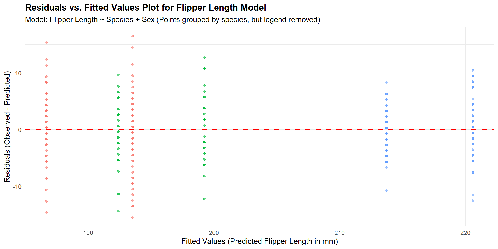
Normality
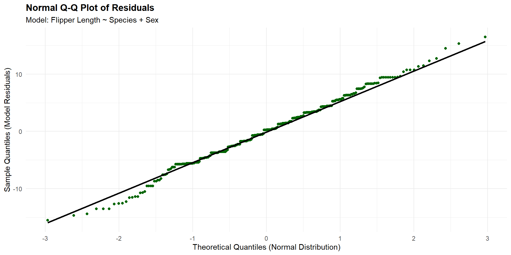
F-statistic
\[F_A = \frac{\mathbf{MS}_A}{\mathbf{MS}_{Error}}\]
\[\mathbf{MS}_A = \frac{\mathbf{SS}_A}{\mathbf{df}_A}\]
\[\mathbf{MS}_{Error} = \frac{\mathbf{SS}_{Error}}{\mathbf{df}_{Error}}\]
Graphically, what does this look like?
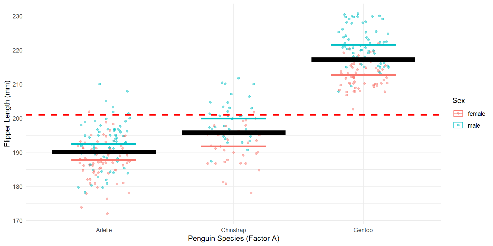
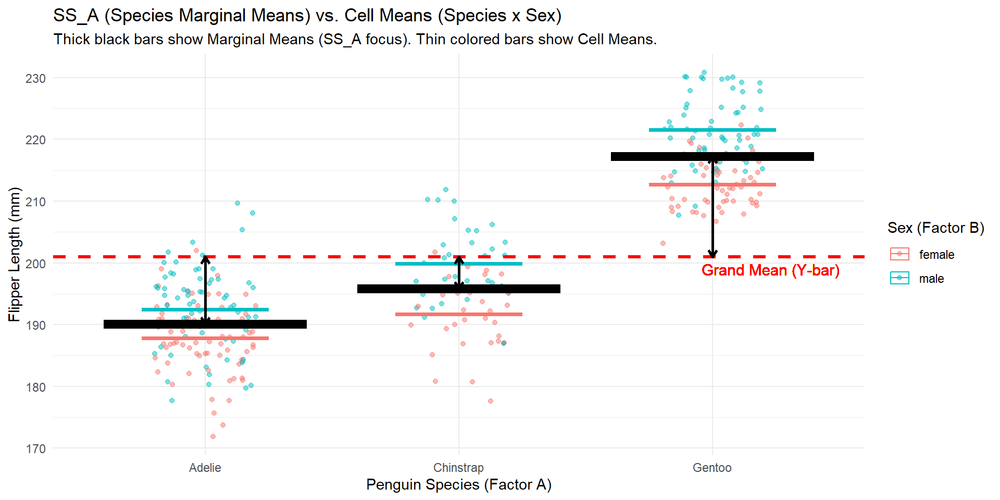
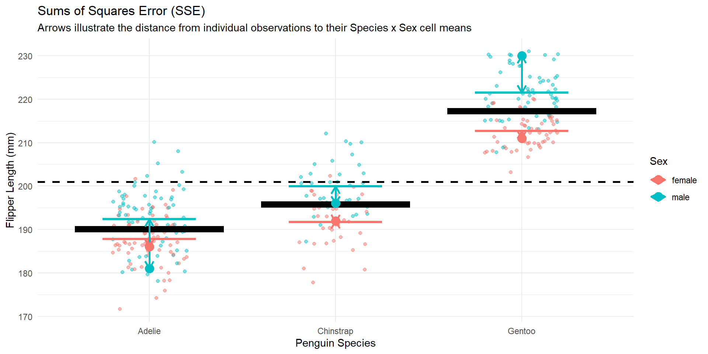
F-statistic
The \(F\)-test for Factor A determines if the variation explained by Factor A (\(MS_A\)) is significantly greater than the variation due to random error (\(MS_{Error}\)).
\[F_A = \frac{\text{Variability due to Factor A}}{\text{Variability due to Random Error}}\]
Compare this to one-way ANOVA
one-way
Df Sum Sq Mean Sq F value Pr(>F)
species 2 50526 25263 567.4 <2e-16 ***
Residuals 330 14693 45
---
Signif. codes: 0 '***' 0.001 '**' 0.01 '*' 0.05 '.' 0.1 ' ' 1two-way
Df Sum Sq Mean Sq F value Pr(>F)
species 2 50526 25263 770.5 <2e-16 ***
sex 1 3906 3906 119.1 <2e-16 ***
Residuals 329 10787 33
---
Signif. codes: 0 '***' 0.001 '**' 0.01 '*' 0.05 '.' 0.1 ' ' 1Takeaway
SSa is the same, regardless if we have B in the model or not.
However! The SS error term is different (smaller), giving us a more direct (precise?) comparison between A and the response.
Precision
What is precision in ANOVA?
Precision
It’s all about reducing the standard error!
We typically don’t see the SE in the ANOVA table, but here it is:
\[\mathbf{SE}(\mathbf{\bar{Y}_1}) = \sqrt{\frac{\mathbf{MS}_{\text{Error}}}{n_1}}\]
it’s a function of the MS error! Which we saw decrease in going from one-way to two-way ANOVA!
Why is it good?
In general…more precision =
– more “honest” / direct comparisons (isolate the true effect)
– smaller confidence intervals
– More power (given you are looking at the same hypothesis test)
Summary
Controlling Confounders: When you add a control variable (like Sex) to reduce the Sum of Squares Error (\(\mathbf{SS}_{\text{Error}}\)), you gain precision. This means you do a better job at isolating the unique effect of your primary predictor (Species) from the confounding influence of the control variable.
two-way
Df Sum Sq Mean Sq F value Pr(>F)
species 2 50526 25263 770.5 <2e-16 ***
sex 1 3906 3906 119.1 <2e-16 ***
Residuals 329 10787 33
---
Signif. codes: 0 '***' 0.001 '**' 0.01 '*' 0.05 '.' 0.1 ' ' 1What is this telling us?
Questions
New Scenario
I want to know if there is a relationship between the flipper length of a penguin, and the bill length of a penguin. Specifically, I’m interested if bill length can help us explain the changes in flipper length.
How is this different than before?
Learning objectives
– Review of regression
– How a line of best fit is made
– How to talk about the line of best fit
Regression!
Plot the data
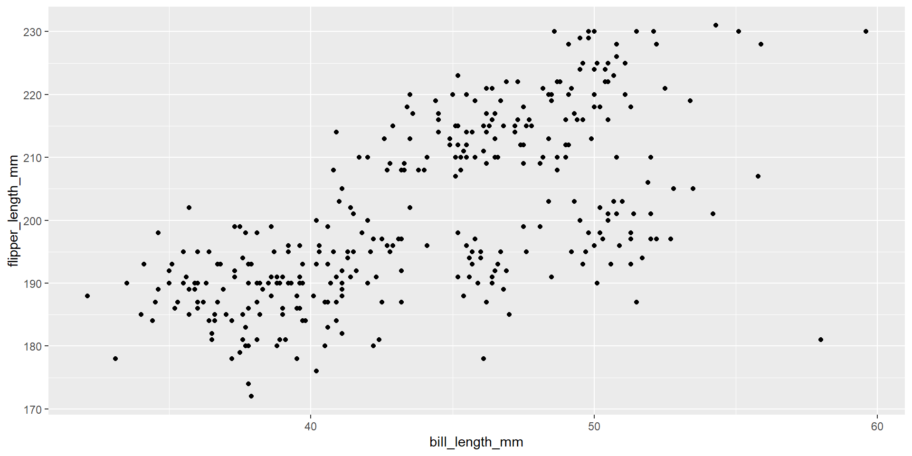
How can we summarize these data?
Summary statistics
– correlation (r)
– slope + intercept (fit a line)
Correlation
– Is bounded between [-1, 1]
– Measures the strength + direction of a linear relationship
What do I mean by linear relationship?
What do I mean by strength?
What do I mean by direction?
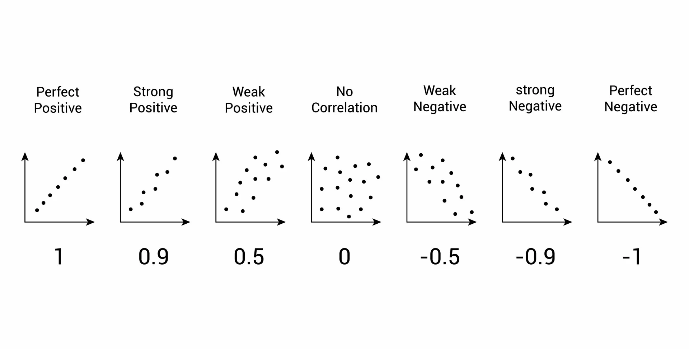
Guessing Game
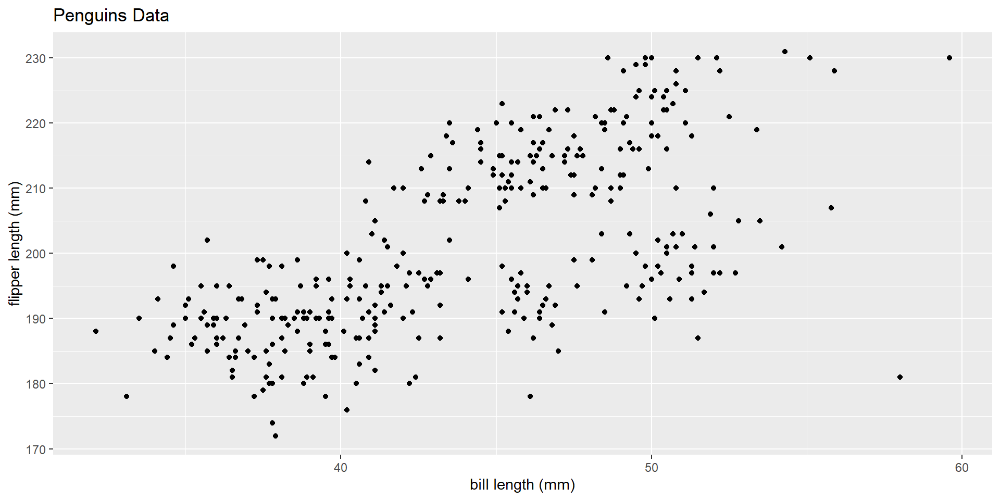
Let’s find the correlation coefficient between our two variables
syntax: cor(x, y)
# A tibble: 1 × 1
corr
<dbl>
1 0.656Summary statistics
– correlation (r) ✔️
– slope + intercept (fit a line)
Fit a line
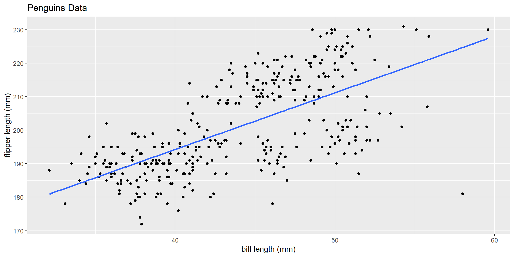
How do we suppose that this line was fit?
Residual
\(e_i = y - \hat{y}\)
where y is an observed value, and \(\hat{y}\) is the predicted value based on the line!
Minimize the residual sums of squares: \(\sum (y_i - \hat{y_i})^2\)
Residual
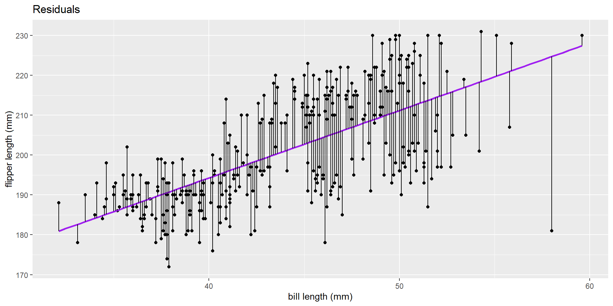
What can we do with this line?
Why do you suppose we fit a line?
– Prediction
– Interpretation
– Hypothesis testing to test for a relationship (inference)
The equation
Have you heard of \(y = mx + b\) ?
The equation
Let me introduce you to:
Population level: \(y = \beta_o + \beta_1*x + \epsilon\)
Sample: \(\hat{y} = \hat{\beta_o} + \hat{\beta_1}*x\)
The equation
\(\hat{y}\) (yhat) = predicted value of y
\(\hat{\beta_o}\) (b) = estimated intercept
\(\hat{\beta_1}\) (b1) = estimated slope
\(x\) = explanatory variable
Terms
– What is an intercept?
– What is a slope coefficient?
In-R
# A tibble: 2 × 5
term estimate std.error statistic p.value
<chr> <dbl> <dbl> <dbl> <dbl>
1 (Intercept) 127. 4.67 27.2 3.65e-87
2 bill_length_mm 1.69 0.105 16.0 1.74e-43Writing out our model
\(\hat{y} = \hat{\beta_o} + \hat{\beta_1}*x\)
\(\widehat{\text{flipper length}} = 126.68 + 1.69*\text{bill length}\)
How do we interpret the intercept? How do we interpret the slope coefficient?
Slope coefficient
bill length of 1
\(\widehat{\text{flipper length}} = 126.68 + 1.69*\text{bill length}\)
\(\widehat{\text{flipper length}} = 126.68 + 1.69*1\)
\(\widehat{\text{flipper length}} = 128.37\)
Slope coefficient
bill length of 2
\(\widehat{\text{flipper length}} = 126.68 + 1.69*2\)
\(\widehat{\text{flipper length}} = 126.68 + 3.38\)
\(\widehat{\text{flipper length}} = 130.06\)
130.06 - 128.37 = 1.69 (The amount we move up as bill length increased by 1 mm)
Interpretation
For a 1 mm increase in bill length we estimate a 1.69 mm increase in mean flipper length
For a 1 mm increase in bill length, we estimate on average, a 1.69 mm increase in flipper length.
Why mean flipper length?
We are estimating the mean flipper length, because our model is calculating the expected value of flipper length at a given bill length.
The response variable in regression (denoted as \(Y\)) is considered a random variable because, for any given set of predictor values (\(X_1, X_2, \dots\)), the observed value of \(Y\) is subject to uncertainty or random error
Population level: \(y = \beta_o + \beta_1*x + \epsilon\)
Sample: \(\hat{y} = \hat{\beta_o} + \hat{\beta_1}*x\)
Sample: \(E(\hat{y}) = \hat{\beta_o} + \hat{\beta_1}*x\)
Why mean flipper length?
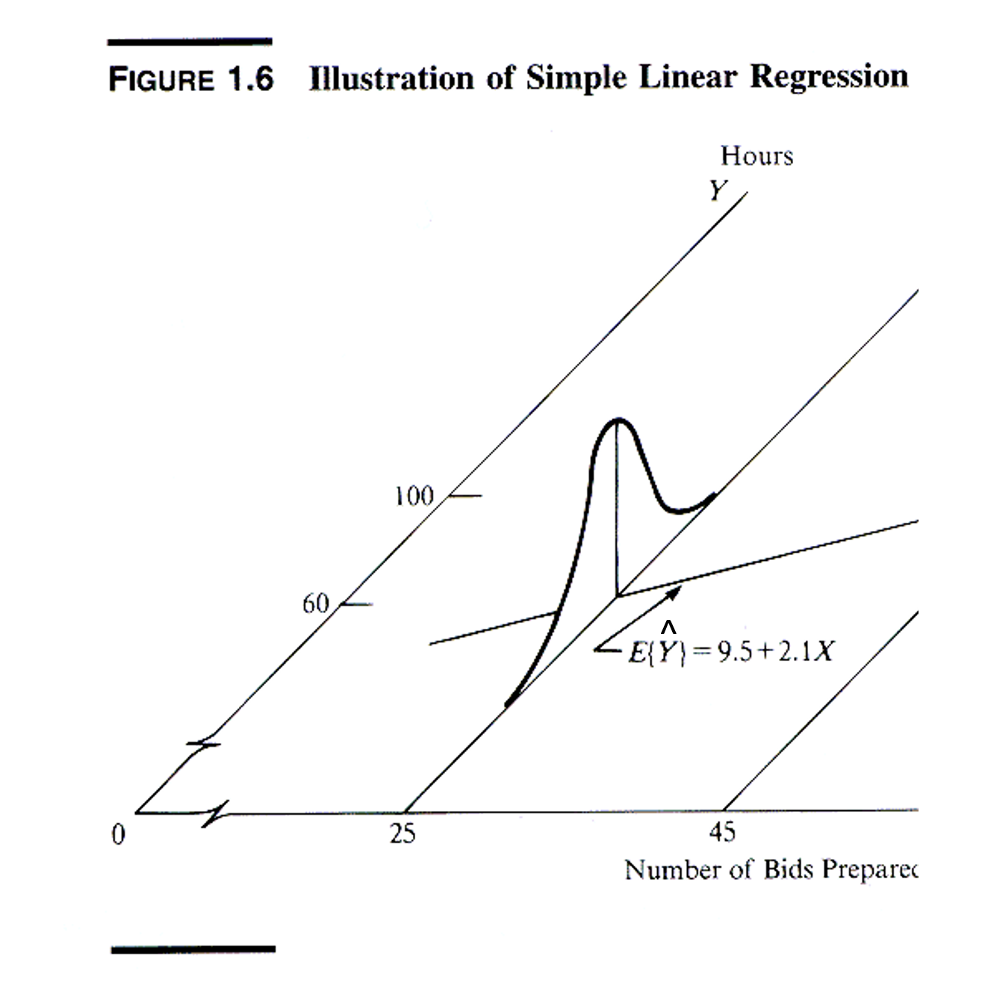
The phrase expected value is a synonym for mean value in the long run (meaning for many repeats or a large sample size).
Intercept
\(\widehat{\text{flipper length}} = 126.68 + 1.69*\text{bill length}\)
\(\widehat{\text{flipper length}} = 126.68 + 1.69*0\)
\(\widehat{\text{flipper length}} = 126.68 + 0\)
\(\widehat{\text{flipper length}} = 126.68\)
We \(\widehat{estimate}\) a mean flipper length of 126.68 mm for a penguin that has a bill length of 0 mm.
Prediction
How would we use this line for prediction? What would we predict a penguin’s flipper length to be if a penguin had a bill length of 50mm?
Prediction
\(\widehat{\text{flipper length}} = 126.68 + 1.69*\text{bill length}\)
\(\widehat{\text{flipper length}} = 126.68 + 1.69*50\)
= 211.18mm
We would predict a penguin with a bill length of 50 mm to have an average flipper length of 211.18 mm.
What if we add another variable?
Should we consider other variables?
Do we think that bill length is the only explanatory variable we should use to under flipper length?
What others might be good?
Should we consider other variables?
Do we think the relationship between bill length and flipper length depends on the species of penguin? Let’s investigate!
Before

Species
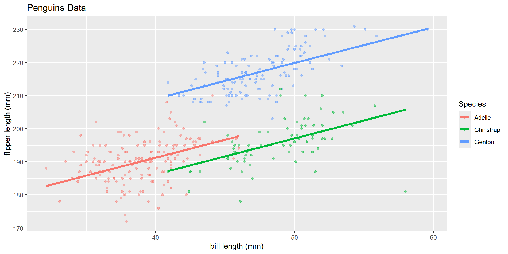
Species
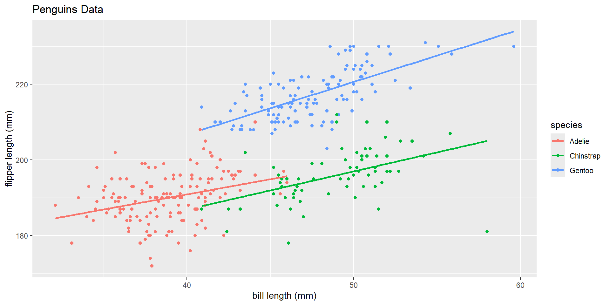
Difference
Visually, what’s the difference?
Where we are going
Regression equations are used for:
– Exploratory analysis
– Inference
We can estimate slopes and talk about them…..
… but we can also use inference techniques to test if
– a slope coefficient is statistically different than 0
– if an interaction effect is needed
– etc.